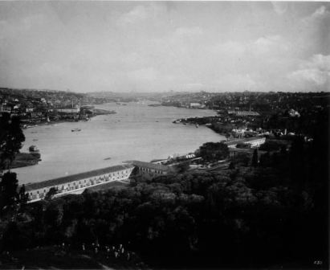

Eyüp Camisi ve türbe–i şerif hakkında, evvelce umumi şekilde malumat vermiştik. Şimdi, bu iki mübarek bina hakkında vermiş olduğumuz binanın hususiyetlerini biraz genişletelim:
Fatih’in inşa ve 3’üncü Selim’in de yeni baştan tamir ettirdiği Eyüp Camisi, çok büyük bir bina değildir. Ancak gayet zarif ve son derecede ruhaniyetlidir. Kapıdan girildiği anda, en kasvetli gönüllere bile derhal bir inşirah ve ferahlık verir.
Cami ilk yapıldığı zaman, o devrin mimari tarzı icaplarından olduğu veçhile gayet basitti. Duvarları ve kubbesi her türlü tezyinattan (süslemeden) ârî (arınmıştı) idi. Lâkin muhtelif zamanlarda ve bilhassa 3’üncü Sultan Selim’in zamanında gördüğü esaslı tamirler esnasında Türk sanat tarzına uygun bir surette tezyin olunmuş ve nefis Türk çinileriyle süslenmişti. Camiye girebilmek için iki avludan geçilir. Bu avluların büyüğüne (dış avlu), küçüğüne de (iç avlu) denilir.
Büyük avlunun kapısı, çarşıya ve oyuncakçılar tarafına açılır. Bu avluya girildiği zaman sol tarafta sırasıyla muvakkithane, hünkâr mahfeli kapısı, cam hademelerine, imam ve müezzinlere ait odalarla abdest almak için musluklar vardır.
Padişahlar, karadan Eyüp Camisine geldikleri zaman büyük avlunun kapısından içeriye atla girerler ve oradaki hünkâr mahfelinin kapısı öndeki binek taşında attan inerlerdi. Denizden gelip gittikleri zaman, ata binmek adet değildi. Bostan İskelesinden camiye kadar yayan giderlerdi.
Büyük avlunun sağ cephesi kapısından küçük avluya girilir. Bu avlu, dört köşedir. Ortasındaki demir parmaklıklarla çevrilmiş olan yüksekçe bahçede, Hazret–i Hâlid’in vefatından sonra mübarek cesedinin yıkandığı rivayet edilmektedir. Bu küçük bahçenin dört tarafındaki muslukların da kısmetleri çıkmıyan kızlar ve hacetlerinin reva olacağına inananlar tarafından açılıp kapanması, o bahçeye atfolunan mebrûkıyetten (tebrike uygun) ileri gelmektedir.
İç avluya girildiği zaman sol tarafı teşkil eden cephe, türbe–i şerifedir. Burada ilk göze çarpan, türbenin Muvacehe (yüzleşme) penceresidir. Buna halk tarafından hacet penceresi de denilir.
Türbe–i Şerife’ye girmeyenler tarafından Hazret–i Hâlid’in mübarek kabri, bu pencereden ziyaret edilir. Çünkü sanduka–i şerifesi, bu pencereden tamamiyle görünen bir mevkidedir.
Bu pencerenin gayet sanatkârane bir şekilde tunçtan yapılmış olan parmaklığı, o kadar nefis bir surette imal edilmiştir ki, parmaklık değil, adeta tunç bir sahile üzerine yapılmış olan zarif bir oyma hissi vermektedir.
Türbe–i Şerife’nin bütün nefasetini gösteren en kıymettar çinilerle süslenmiştir ve bu tezyinata da, emsaline ender tesadüf edilen sanatkârane bir ahenk verilmiştir.
Namazlardan sonra imamın muvacehe penceresi önüne giderek dua etmesi ve bu duada bulunan cemaatin de (Âmin…) demesi, asırlardan beri devam eden bir adettir.
Aynı zamanda Eyüp kabristanına defnolunmak için getirilen cenazeler, namazları kılındıktan sonra muvacehe penceresi önüne getirilip sıra ile dizilirler ve orada tezkiye edilirlerdi.
Bu tezkiyeyi, namazı kıldıran imam yapardı. Ve orada hazır bulunanlara, şu sualleri sorardı:
“Ey cemaati Müslimin! Şu mevtayı, nasıl bilirsiniz?”
Cemaat, hep bir ağızdan şu cevabı verirdi:
“İyi biliriz.”
Bu cevabı aldıktan sonra imam, şu suali de sorardı:
“Burada böylece şahadet ettiğiniz gibi, yarın ahrette de böyle şahadet eder misiniz?”
Cemaat bu suale de, yine hep bir ağızdan şu cevabı verirdi:
“Ederiz.”
Tezkiye bu suretle bittikten sonra, kısa bir dua edilir, ondan sonra cenazeler kabirlerine götürülerek toprağa verilirdi.
Bu, İslâmiyet’in öyle makbul ve Memduh bir âdeti idi ki, asırlarca devam ettiği halde, ne şekilde ve ne de sözlerinde, en küçük bir değişiklik yapılmamıştır.
Bilhassa, tezkiyenin sonunda yine imam tarafından sorulan üçüncü bir sual daha vardır ki, o da ölü hakkında, cemaatten helallik tabından ibaretti. İmam:
Mevta üzerinde bir hakkınız varsa helal eder misiniz? Derdi.
Cemaat bu suale de:
“Helal olsun.”
Diye cevap verirlerdi. Ve İslâmiyet’in saf itikatlarına nazaran artık o ölü, Cenab–ı Hakk’ın huzuruna, üzerinde hiçbir kul borcu olmadan giderdi.
Her iki avluda da, bütün günlerin her saatinde, ruhani bir hava eserdi. Hafif bir şırıltı ile akan musluklardan abdest alan müminler, kıpırdayan dudaklarının arasından dua okuyarak sessiz sedasız camiye girerler. Namazını kıldıktan sonra türbe–i şerifin muvacehe penceresi önüne gelerek orada da Hazret–i Hâlid’in mübarek ruhundan şefaat dilerler, dualarını bitirdikten sonra, çekilip giderlerdi.
O derin ve uhrevi sessizlik içinde ya o gövdesi yüksek çınarların dallarına yuva yapmış leyleklerin gagalarını birbirine çarpmalarından hâsıl olan muttarit (düzenli) takırtılar ve yahut yüzlerce güvercinin havalanıp yere konmasından husule gelen kanat sesleri işitilirdi.
Cuma günleriyle, diğer mübarek günlerde, bunlara bir ses daha inzimam ederdi. O da, hayır sahipleri tarafından halka dağıtılan suyu ilan edenlerin sesleri idi. Geçmişlerine rahmet okutmak için kurban kesmeğe kudreti olmayanlar çarşıdaki suculardan aldıkları bir iki fıçı suyu halka tevzi ettirirler, bu suretle yaptıkları hayır ile geçmişlerinin ruhlarını şad ederlerdi.
Bu arada, büyük avludaki beş asırlık çınarın altındaki birkaç arpacı da pek küçük aralar da Hazret–i Hâlid’in feyz ve ruhaniyeti sayesinde geçinip giderlerdi.
İstanbul halkı, öteden beri evliyalara hürmet gösterirler ve onların ruhlarından daima istimdat (yardım) ve istişfa ederler (şifa isterler) ve sık sık muhtelif evliyaların ziyaretlerine giderlerdi. Fakat bunlarından en ziyade Hazret–i Hâlid ile Koca Mustafapaşa’da ki Sümbül Sinan ve surların haricindeki kendi namını taşıyan büyük kabristanda metfun (gömülü) Merkez Efendi’yi ziyaret ederlerdi. Bu üç mühim türbenin ziyaretçileri, haftanın her gününde ve günlerin her saatinde eksik değildi.
Sümbül Sinan’ın asıl ismi Şeyh Sinaeddin Yusuf idi. Sultan Süleyman Kanuni devrinin en yüksek âlimlerindendi. Ve halkın son derecede hürmetini kazanmış olan tarikat pirlerindendi.
Bu zat, evvela ilim ile iştigal etmiş. Medrese tahsilini bitirdikten sonra, o devrin en yüksek âlimlerinden Efdalzade’nin derslerine devam ederek bu zattan büyük feyizler iktisap eylemişti (edinmişti). Sonra Tasavvuf ilimine sulûk ederek (girerek), Çelebi Halife’ye intisap etmiş, ondan da pek feyz aldıktan sonra Mısır’a gitmiş, bir hayli zaman orada ders vermek ve halkı irşad etmekle büyük bir şöhret iktisap eylemişti. O sırada kendisinin mürşidi olan Çelebi Halife vefat etmişti. Ve vefat ederken:
—Sinan’a haber gönderiniz İstanbul’a gelsin. Kerimem Safiye Molla ile izdivaç etsin. Ve benim bıraktığım posta geçsin, diye vasiyet etmiş.
Mürşidinin vefat ettiğini ve kendisi hakkındaki vasiyetlerini duyar duymaz Sinaneddin Yusuf, derhal İstanbul’a geldi. Üstadının vasiyetini yerine getirdi. Evvela onun kerimesi Safiye Molla ile izdivaç etti. Bir müddet sonra da Mustafa Paşadaki tekkesinde boş bıraktığı posta geçti. Bir müddet sonra da kendisi, Sümbüli tarikatını tesis etti. Bu suretle, Tarikat pirleri sırasına girdi.
Sümbül denilen çiçeği çok sevdiği için kendisine (Sümbül Sinan) denilmişti. Ve tesis ettiği tarikata, (sümbüli) adı verilmişti.
Bu zat yalnız tarikat işleriyle meşgul olmamıştı, aynı zamanda bütün hayatını halka vaiz ve irşadla geçirmişti. Halkın son derece hürmet ve muhabbetini celbetmişti. 936 tarihinde vefat ettiği zaman İstanbul halkı günlerce çok acı bir tesirin ıstıraplarını çekmişti. Mübarek na’şı, tekkesinin avlusuna defnedildiği günden beri, onun türbesi halkın ziyaretgâhı kesilmiştir. Aradan dört asra yakın bir zaman geçtiği halde bu büyük alim ve mutasavvıfın ziyaretçileri hiçbir gün eskimemiştir. Bilhassa Arabî aylarının ilk Cuma günleri, türbenin bulunduğu avluda mahşeri bir kalabalık görülmektedir.
Merkez Efendi’ye gelince, Bu zatın ismi de Muslihiddin’dir. Denizli’nin bir köyünde dünyaya gelmiştir. İlk tahsillini Denizli’de yaptıktan sonra İstanbul’a gelerek (Sümbül Sinan) hazretlerine intisap etmiş onun tesis ettiği (Sümbüli) tahrikâtına girerek pirinden aldığı feyz ile büyük terakki eserleri göstermişti. Nihayet bir gün, Kanuni Sultan Süleyman’ın validesi onun yüksek faziletlerini işitmiş, Topkapı surlarının haricinde onun namına bir dergâh inşa ettirmiş ve Merkez Efendi’yi, o dergâhın postnişinliğine geçirmiştir.
Sümbül Sinan hazretlerinin hayatta bulunduğu müddetçe, Merkez Efendi, kendi namına yapılmış olan dergâhın postnişinde kalmıştır. Lâkin Sümbül Sinan’ın vefatını müteakip –pirinin vasiyeti mucibince– Koca Mustafa Paşadaki dergâhın postuna oturarak, orada vaaz ve irşatlara başlamıştır. Kendisi son derece abid, zahid, halim selim bir zat olduğu için, az zamanda halkın son derecede hürmet ve muhabbetini kazanmıştır.
Merkez Efendi, hayatının büyük bir kısmını, Koca Mustafa Paşadaki Sümbül Sinan dergâhında geçirmiştir. Vefat ettikten sonra, Topkapı haricindeki dergâhına getirilerek orada kendisi için yapılmış olan türbeye defnedilmiş. Bu zatın türbesi ile bilhassa çilehanesi, ziyaretgâh halindedir.
Asırlardan beri halk arasında devam eden itikada nazaran: Hazret–i Hâlid’i ziyaret ettikten sonra, evvela Sümbül Sinan hazretlerini ve sonra da Merkez Efendiyi zâtın türbeleri, birbirlerine bağlı olan, bir ziyaretgâhı enamdır.
